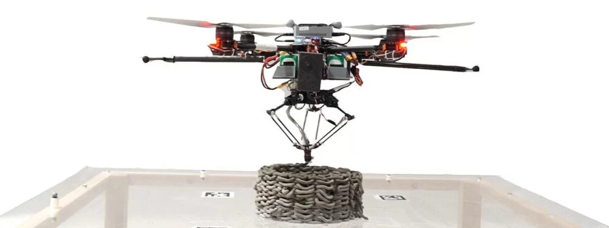

Cientistas criam impressoras 3D em forma de drone para construção

Um grupo de cientistas e pesquisadores da University of Bath está trabalhando na criação de uma fusão entre impressoras 3D e drones para ajudar na construção e reparos de prédios. A inspiração vem de enxames de abelhas e vespas, que constroem juntas seus ninhos.
Segundo os responsáveis pelo projeto, os drones podem usar materiais leves para reformar ou até construir prédios em áreas de acesso difícil ou perigoso, como no topo de construções elevadas ou na reforma de locais instáveis depois de desastres, por exemplo
A criação dos drones não se resume à robótica, porque envolveu também a criação de materiais de construção que sejam leves o suficiente para serem carregados em voo pelas pequenas máquinas, mas ao mesmo tempo resistentes o suficiente para cumprirem seu propósito. Um dos líderes do projeto, Professor Mirko Kovac, afirma que seu enxame já foi capaz de "construir e reparar prédios, pelo menos no laboratório". Segundo os criadores, a precisão dos drones tem uma variação de apenas cinco milímetros.
O próximo passo da pesquisa é trabalhar com empresas de construção para validar as soluções percebidas em laboratório em cenários práticos. O objetivo final das pequenas impressoras 3D voadoras é diminuir os riscos e custos da construção civil no futuro.